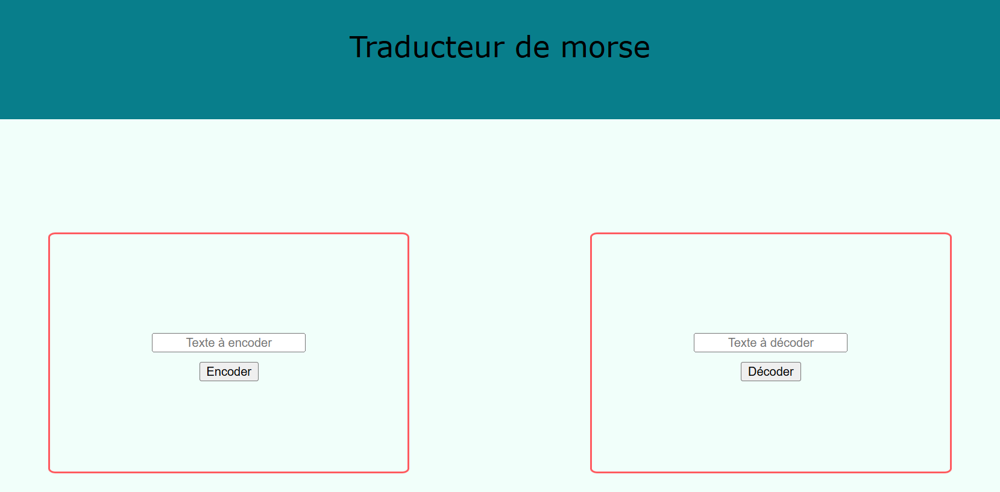
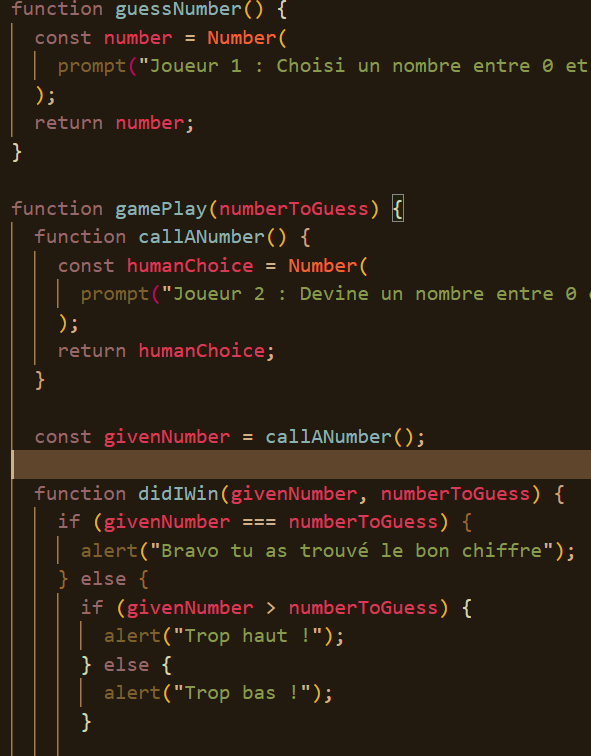
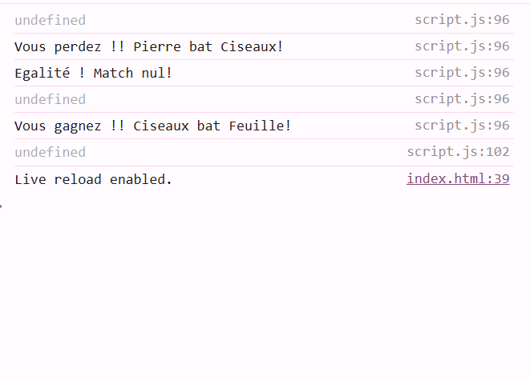
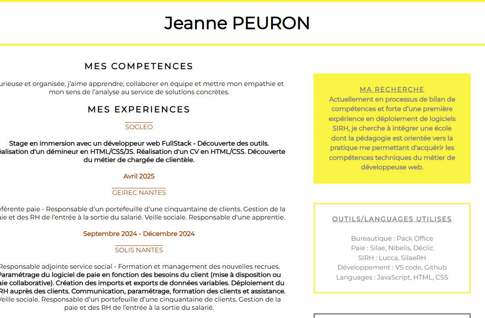

Hola, moi c'est Jeanne 👋
Après près de dix ans dans le domaine de l’expertise comptable, en tant que responsable adjointe d’un service social, j’ai choisi d’opérer un virage à 180° vers un domaine qui m’a toujours passionnée : la tech !Et voici mon tout premier site web : mon portfolio.
Vous y découvrirez les différents exercices que j’ai réalisés dans le cadre de ma formation chez Ada Tech School.
Bonne visite 🚀.
MES EXERCICES

Exercice : Quiz
Réalisation d'un quiz sur un thème choisi en groupe.
Travail de groupe : utilisation du Git et des branches etc...
Sauvegarde du tableau des questions dans le localStorage, incrémentation du score dans l'URL.
Mélange du tableau des questions avec l'algorithme de Fisher Yates.
Utilisation de Math.random pour des questions aléatoires.
Apprentissages : Git, DOM, LocalStorage, incrémentation URL, Fisher Yates.
Apprentissages : Git, DOM, LocalStorage, incrémentation URL, Fisher Yates.
Technologies utilisées : HTML / JS
Lien vers Github.
Date de réalisation : Novembre 2025

Exercice : Traducteur de morse
Réalisation d'un traducteur de morse. Le traducteur encode et décode le morse.
Utilisation du DOM pour créer une interface.
Travail sur un tableau d'objets.
Application d'une fonction à plusieurs éléments du tableau avec la fonction flêchée et map().
Apprentissages : DOM, tableaux, objets et fonction.
Apprentissages : DOM, tableaux, objets et fonction.
Technologies utilisées : JS / HTML / CSS
Lien vers Github.
Date de réalisation : Novembre 2025
Exercice : Reproduction d'un design
Reproduction d'une interface donnée.
Réalisation d'un style complet en utilisant le flexbox et le grid pour la disposition des containers.
Utilisation des mediaqueries pour rendre le resultat responsive.
Apprentissages : Responsive, flexbox et grid.
Apprentissages : Responsive, flexbox et grid.
Technologies utilisées : HTML / CSS
Lien vers Github.
Date de réalisation : Octobre 2025

Exercice : Guess a number
Réalisation d'un jeu à deux utilisateurs.
Le jeu est disponible dans la console.
Utilisation du prompt pour interagir avec les utilisateurs.
Utilisation des conditions pour faire deviner un chiffre choisi par l'utilisateur 1 à l'utilisateur 2.
Apprentissages : Le prompt et les conditions.
Apprentissages : Le prompt et les conditions.
Technologie utilisée : JS
Lien vers Github.
Date de réalisation : Octobre 2025

Exercice : Création du jeu SHI-FU-MI
Dans le cadre de la formation découverte chez AdaTechSchool : création par groupe de 3 du jeu SHI-FU-MI. Avec
deux utilisateurs. Utilisations des boucles et des conditions. Les résultats s'affichent dans la console.
Apprentissages : Les variables, les fonctions, les boucles et les conditions.
Apprentissages : Les variables, les fonctions, les boucles et les conditions.
Technologie utilisée : JS
Lien vers Github.
Date de réalisation : Juillet 2025

Exercice : Création de mon CV
Dans le cadre de mon bilan de compétences, réalisation d'un stage auprès d'un
développeur
web : Réalisation de mon CV.
Apprentissages : Premiers pas vers le HTML et le CSS.
Apprentissages : Premiers pas vers le HTML et le CSS.
Technologies utilisées : HTML / CSS
Lien vers Github.
Mai 2025